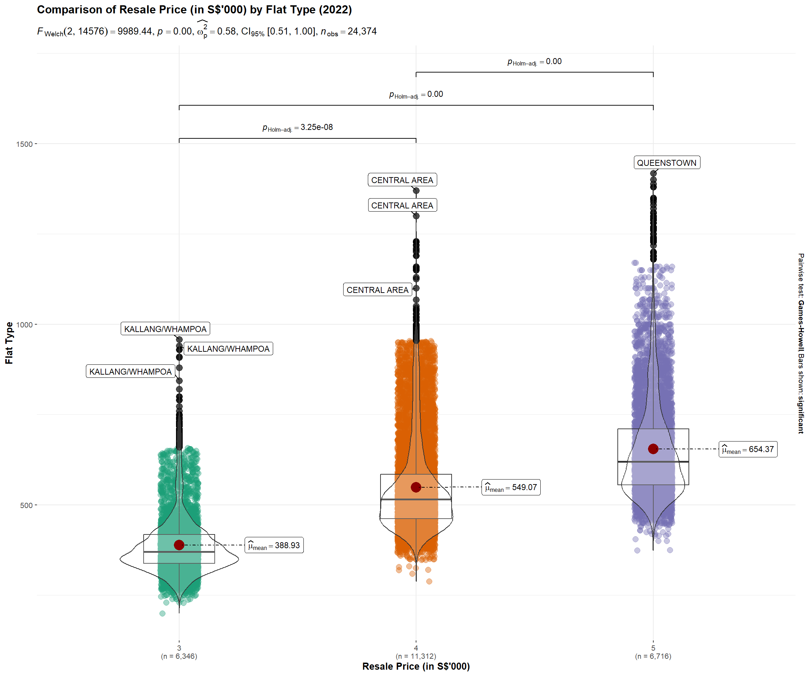
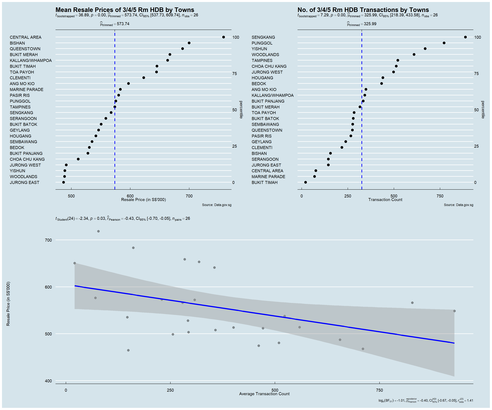
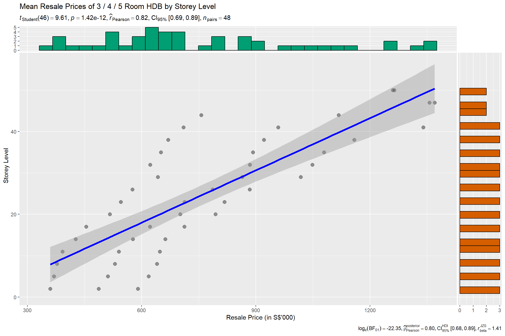
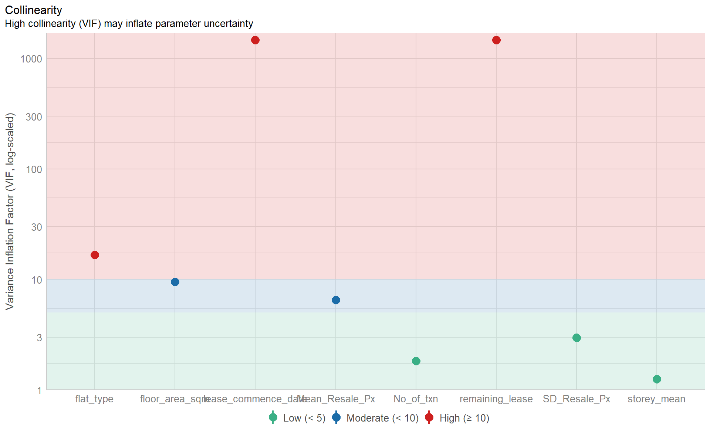
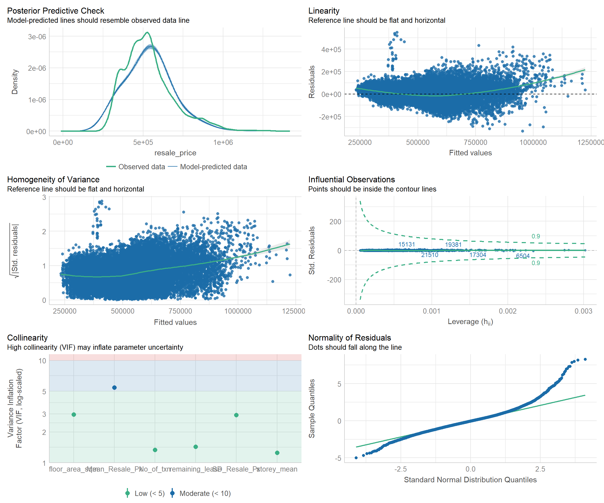
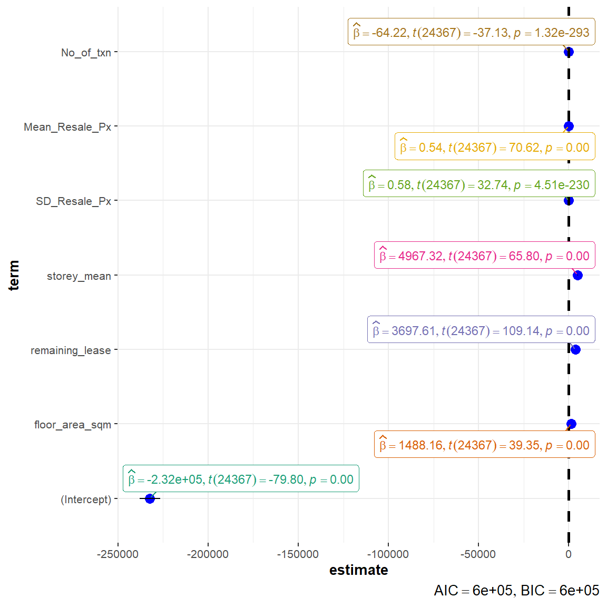

pacman::p_load(readr, dplyr, tidyverse, ggstatsplot, performance, parameters, ggthemes) Take Home Exercise 3
1. Introduction
Take-home Exercise 3 will seek to uncover the salient patterns of the resale prices of public housing property by residential towns and estates in Singapore by using appropriate analytical visualisation techniques learned in Lesson 4: Fundamentals of Visual Analytics. The dataset selected for this exercise is sourced from Data.gov.sg and contains data on the Resale Flat Prices based on Registration Date from Jan 2017 onwards.
For the purpose of this study, only 3-ROOM, 4-ROOM and 5-ROOM flat types will be used for analysis. The study period is conducted based on transactions recorded in 2022.
2. Data Visualization
Installing and Loading R Packages
Importing Data
resale_data <- read_csv("data/resale-flat-prices-based-on-registration-date-from-jan-2017-onwards.csv")Data Preparation
#<< Data Wrangling of Dataset
resale_filtered <- resale_data %>% #<< filter only for 3 / 4 / 5 Room Flat Types
filter(flat_type == "3 ROOM" |
flat_type == "4 ROOM" |
flat_type == "5 ROOM") %>%
filter(month < 2023 & month >= 2022) %>% #<< filter only for transactions in year 2022
separate(flat_type,c("flat_type","NA1"), sep=" ") %>% #<< Transform flat_type: only retain first character for flat_type
select(-c(NA1)) %>%
separate(storey_range,c("storey_low","storey_high"), sep=" TO ") %>% #<< Get median floor based on storey range
mutate(storey_mean = ((as.numeric(storey_high)-as.numeric(storey_low))/2) +
as.numeric(storey_low)) %>%
select(-c(storey_low,storey_high)) %>%
separate(remaining_lease, #<< split remaining_lease column with 'space' as a delimiter
c("remaining_lease","NA1","remaining_months","NA2"), sep = " ") %>%
mutate(remaining_months = ifelse(is.na(remaining_months), 0, remaining_months), #<< Converting delimited fields for remaining lease into numeric attribute
remaining_months = as.numeric(remaining_months)/12,
remaining_lease = as.numeric(remaining_lease)+remaining_months) %>%
select(-c(NA1,NA2,remaining_months)) %>% #<< drop NA1 / NA2 / remaining_months columns
rename(txn_month = month) %>% #<< rename column for clarity
separate(txn_month, c("txn_month","NA1"), sep = "-") %>% #<< split txn_month column with '-' as a delimiter
mutate(NA1 = as.numeric(NA1)/12, #<< Converting delimited fields for remaining lease into numeric
txn_month = as.numeric(txn_month)+NA1) %>%
select(-c(NA1)) #<< drop NA1 columns
#<< Derive Summarized Values: SD / Mean / Count
resale_grouped <- resale_filtered %>%
select(town, flat_type, resale_price) %>%
group_by(town, flat_type) %>%
summarise(SD_Resale_Px=sd(resale_price),
Mean_Resale_Px=mean(resale_price),
No_of_txn=n(),
.groups = 'drop')
#<< Left join back to main dataset to get full data
resale_filtered <- left_join(resale_filtered,
resale_grouped,
by = c("town" = "town", "flat_type" = "flat_type"))Analytical Visualization #1 - Box Violin Plot
Selection and Design Considerations
This visualization uses the ggbetweenstats() method in the ggstatsplot package to conduct a One-way ANOVA test on Resale Prices by Flat Type.
• A combination of box and violin plots along with jittered data points for between-flat type designs is used – side-by-side display of plots is able to give the user an immediate visual comparison of the differences in resale prices across flat types.
• Statistical details included in the plot as a subtitle gives the user quantitative validation of the One-way ANOVA test outcomes.
• Y-axis Resale prices has been rounded to thousands to facilitate the user’s ease of reading.
• Outlier label is turned on to identify the towns where outlier prices have been recorded.
Reproducible Description Data Viz Prep
The code chunk below contains the codes required to reproduce this visualization, along with the corresponding annotations which describes the procedures used.
set.seed(123)
resale_filtered1 <- resale_filtered %>%
select(resale_price, town, flat_type) %>%
mutate(resale_price = resale_price/1000)
ggbetweenstats(
data = resale_filtered1, #<< dataframe
x = flat_type, #<< grouping / independent variable
y = resale_price, #<< dependent variables
xlab = "Resale Price (in S$'000)", #<< label for the x-axis
ylab = "Flat Type", #<< label for the y-axis
title = "Comparison of Resale Price (in S$'000) by Flat Type (2022)", #<< Plot Title
caption = "Source: Data.gov.sg", #<< Caption
type = "p", #<< type of statistical test: parametric
mean.plotting = TRUE, #<< whether the mean is to be displayed
outlier.tagging = TRUE, #<< whether outliers should be flagged
outlier.coef = 3, #<< outlier coeff - configured to display extreme outliers
outlier.label = town, #<< label to attach to outlier values
outlier.label.color = "red", #<< outlier point label color
messages = FALSE #<< turn off messages
) 
Insights Revealed by Data Viz
Resale prices are currently over-valued across all flat types.
From the plot, we are able to see that the distribution is positively skewed across all 3 flat types, where the mean > median. This means that the data constitutes a higher frequency of high valued resale transaction prices.
4-Room and 5-Room Flats are more over-valued
The mean, identified by the red dot in the plot, appears to be further away for 4-Room and 5-Room flats vs 3-Room flat, which implies the higher price premium imposed on the demand for bigger houses.
Resale prices across flat types is statistically different
Given that the p-value is smaller than the alpha level, the null hypothesis is rejected and we can statistically validate that there are indeed differences in the resale prices across flat types.
Pricing in of location premium
Looking that the extreme outlier labels displayed in the plot, we can also see how the location premium effect is priced into the resale transaction prices. For example, a 4 Room HDB flat in the central area can cost more than most 5 Room HDB flats.
Analytical Visualization #2 - Dot Plot
Selection and Design Considerations
This visualization uses the ggdotplotstats() method in the ggstatsplot package to conduct a Bootstrap-t method for one-sample test. The output is visualized in a dot plot using the Cleveland dot plot.
• Displaying in a dot plot makes the labels easier to read, as the towns are sorted in percentile terms, thereby reducing graph clutter.
• The mean labels are clearly defined, allowing the user a basis to easily identify overvalued/undervalued towns relative to the mean.
• Plots displayed side-by-side allows the user a visual comparison of the transacted prices relative to the transaction count across towns.
• Statistical details included in the plot as a subtitle gives the user quantitative validation of the one-sample test outcomes.
Reproducible Description Data Viz Prep
The code chunk below contains the codes required to reproduce this visualization, along with the corresponding annotations which describes the procedures used.
#<< selecting relevant fields for plot and rounding resale price to thousands
resale_filtered2 <- resale_filtered %>%
select(resale_price, town, flat_type, No_of_txn) %>%
mutate(resale_price = resale_price/1000) %>%
distinct()
#<< derive average txn prices and txn count by towns
resale_filtered3 <- resale_filtered %>%
select(resale_price, town, flat_type, No_of_txn) %>%
group_by(town) %>%
summarise(avg_Px=mean(resale_price),
avg_Txn_Count=mean(No_of_txn),
.groups = 'drop') %>%
mutate(avg_Px = avg_Px/1000)
set.seed(123)
p1 <- ggdotplotstats(
data = resale_filtered2, #<< transformed dataset
y = town, #<< selecting y-axis (i.e., town)
x = resale_price, #<< selecting x-axis (i.e., resale price)
type = "robust", #<< selecting statistical approach (Bootstrap-t method for one-sample test)
title = "Mean Resale Prices of 3/4/5 Rm HDB by Towns", #<< Plot title
xlab = "Resale Price (in S$'000)", #<< x-axis label
caption = "Source: Data.gov.sg", #<< Caption
ggtheme = theme_economist() #<< setting theme of plot
)
p2 <- ggdotplotstats(
data = resale_filtered2, #<< transformed dataset
y = town, #<< selecting y-axis (i.e., town)
x = No_of_txn, #<< selecting x-axis (i.e., no. of txn)
type = "robust", #<< selecting statistical approach (Bootstrap-t method for one-sample test)
title = "No. of 3/4/5 Rm HDB Transactions by Towns", #<< Plot title
xlab = "Transaction Count", #<< x-axis label
caption = "Source: Data.gov.sg", #<< Caption
ggtheme = theme_economist() #<< setting theme of plot
)
p3 <- ggscatterstats(
data = resale_filtered3, #<< transformed dataset
y = avg_Px, #<< selecting y-axis (i.e., avg_Px)
x = avg_Txn_Count, #<< selecting x-axis (i.e., avg_Txn_Count)
xlab = "Average Transaction Count", #<< x-axis label
ylab = "Resale Price (in S$'000)", #<< y-axis label
marginal = FALSE,
ggtheme = theme_economist() #<< setting theme of plot
)
(p1+p2)/p3
Insights Revealed by Data Viz
Towns with the highest location premium
The plot is able to clearly display towns with the highest location premium – Central Area, Bishan, Queenstown, Bukit Merah, etc.
Towns with higher demand
The plot is able to clearly display towns with higher demands (proxied by the number of transactions recorded within the towns in 2022) – Seng Kang, Punggol, Yishun, Woodlands, etc.
Expected Resale Prices to Pay
From the confidence internal, we are 95% confident that a given resale transaction price will fall between the range of $538k and $610k.
Medium Correlation between resale prices and transaction count
The degree of correlation Pearson’s Correlation Coefficient is -0.43, which indicates the correlation between resale prices and transaction count to be at a medium level. This is also observed in the plot where the reference line appears to be slightly tilted downwards.
Analytical Visualization #3 - Scatter Plot
Selection and Design Considerations
This visualization uses the ggscatterstats() method in the ggstatsplot package to evaluate the association between storey level (i.e., floor level of HDB unit) and resale prices.
• A scatterplot is used to depict the relationship between the 2 selected variables.
• A reference line, along with 95% CI cone has been included, which allows the user to visually identify the linear direction of the relationship.
• Statistical details have also been included in the plot itself.
• Distribution plots that depict the distribution of the individual attributes are also available to complement the main scatterplot.
Reproducible Description Data Viz Prep
The code chunk below contains the codes required to reproduce this visualization, along with the corresponding annotations which describes the procedures used.
#<< selecting relevant fields for plot and deriving average txn prices by towns
resale_filtered4 <- resale_filtered %>%
select(resale_price, storey_mean, flat_type) %>%
group_by(storey_mean, flat_type) %>%
summarise(avg_Px=mean(resale_price),
.groups = 'drop') %>%
mutate(avg_Px = avg_Px/1000)
set.seed(123)
ggscatterstats(
data = resale_filtered4, #<< transformed dataset
x = avg_Px, #<< selecting x-axis (i.e., avg_Px)
y = storey_mean, #<< selecting y-axis (i.e., storey mean)
ggtheme = theme_grey(), #<< setting theme of plot
xlab = "Resale Price (in S$'000)", #<< x-axis label
ylab = "Storey Level", #<< x-axis label
title = "Mean Resale Prices of 3 / 4 / 5 Room HDB by Storey Level" #<< Plot title
)
Insights Revealed by Data Viz
High Positive Association between Storey Level and Resale Prices
From the plot, it can be visually noted that the reference line appears to be clearly directed upwards. Complementing this observation with statistical metrics generated from Pearson’s correlation test (r = 0.82) revealed that, across all towns and flat types, the storey height was positively correlated with resale prices. The p-value (p < 0.05) was also confirmed the statistical details to be statistically significant.
Storey Level Premium Priced In
This is indicative that a storey level premium is also another factor priced into the HDB resale transaction prices (i.e., the higher the storey level of the HDB, the higher the resale transaction price is likely to be).
Analytical Visualization #4 - Multiple Linear Regression
Selection and Design Considerations
The Multiple Linear Regression model has been selected because of its simplicity and its performance, allowing us to easily understand how each variable affects the resale price. Several model diagnostic checks from the performance package have also been conducted and visualized. Finally, ggcoefstats() of ggstatsplot package is used to visualise the parameters of the regression model.
• Visualizing collinearity – plotting highly correlated variables using the check_collinearity() function allow the user to easily identify variables which may suffer from multi-collinearity, for the purposes of calibrating the model.
• The other model diagnostic checks have also been ran as a form of sanity check prior to building the finalized regression model.
• The regression model output is visualised using a dot-and-whisker plot, which allows the user to visually identify how each variable impacts the resale prices, along with other statistical details to complement.
Reproducible Description Data Viz Prep
The code chunk below contains the codes required to reproduce this visualization, along with the corresponding annotations which describes the procedures used.
Model Diagnostic: Multi-Collinearity Check
#<< lm() function used from Base Stats of R
#<< all attributes selected in first model version
model <- lm(resale_price ~ flat_type + floor_area_sqm + lease_commence_date +
remaining_lease + storey_mean + SD_Resale_Px + Mean_Resale_Px + No_of_txn,
data = resale_filtered)
#<< running of collinearity check
check_collinearity(model) %>% plot()
New Model Diagnostic: Complete check
#<<dropped flat_type and lease_commence_date attributes
model1 <- lm(resale_price ~ #<<flat_type +
floor_area_sqm + #<<lease_commence_date +
remaining_lease + storey_mean + SD_Resale_Px + Mean_Resale_Px + No_of_txn,
data = resale_filtered)
#<< running of model diagnostic checks
check_model(model1)
Visualizing Regression Model
ggcoefstats(model1,
output = "plot")
Insights Revealed by Data Viz
Removal of variables with high collinearity
Flat type and lease commencement date were identified to be variables with high collinearity, which may distort the model performance. As such, these were removed in the re-calibrated model.
Significant Attributes Contributing to the model
The remaining attributes are validated to be statistically significant (p-value < 0.05): floor_area_sqm, remaining_lease, storey_mean, SD_Resale_Px, Mean_Resale_Px, No_of_txn. The remaining lease and floor level of HDB unit appears to be top variables in determining the HDB resale prices. For instance, for every 1 year increase in remaining lease of the property, the resale price is expected to increase by ~$3698, while for every 1 level increase in floor level, the resale price is expected to increase by ~$4967.
Low AIC and BIC
The low AIC and BIC values are indicative of a good overall model fit.